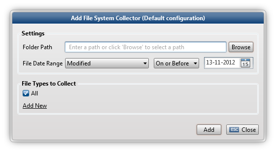

The File System Collector collects files from a specified location.

To share a data folder in Windows, right click on it and select Sharing and Security. Select Share this folder and define a Share Name. Click the Permissions button to define who has access.
Define the date range on which files (created, modified or accessed) are collected.
The date range is not dynamically adjusted. For example, when you choose to collect everything until today (inclusive) and want to rerun the same collection action the next day, it will collect everything until yesterday (inclusive).
|
|
|